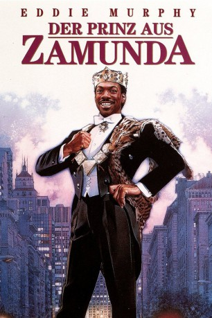

#2056 Der Prinz aus Zamunda
Alternativ: Coming to America
Auszeichnungen: für 2 Oscars nominiert
 
 IMDB-Wertung: 7.0 / 10
IMDB-Wertung: 7.0 / 10  Metascore: 47
Metascore: 47 
Prinz Akeem flieht auf der Suche nach der Traumfrau vom heimischen Zamunda in den New Yorker Stadtteil Queens. Mit seinem Vetter Semmi gibt er sich als armer Student aus und beginnt die Brautschau in Bars und Dicotheken. Schließlich verliebt er sich in die Tochter eines Hamburger-Braters, deretwegen er einen Job im Schnellimbiß annimmt. Mitten ins Liebeswerben des Prinzen stoßen urplötzlich dessen Eltern, die sich auf den Weg gemacht haben, um herauszufinden, wofür der Sprößling plötzlich Unmengen von Geld ausgibt.
Jahr: 1988
Dauer: 116 Minuten
FSK: 12
Land: USA Studio: Paramount PicturesTonspuren: DD2.0 - ,
Untertitel: Deutsch,
Auflösung: 1080p (1920x1080) Größe: 8949 MB
Genre: Komödie, Liebe
Regisseur:  John Landis
John Landis
Drehbuch: Eddie Murphy, David Sheffield, Barry W. Blaustein
Soundtrack: Nile Rodgers
Darsteller:
 Eddie Murphy als Prince Akeem / Clarence / Randy Watson / Saul
Eddie Murphy als Prince Akeem / Clarence / Randy Watson / Saul- Arsenio Hall als Semmi / Extremely Ugly Girl / Morris / Reverend Brown
 James Earl Jones als King Jaffe Joffer
James Earl Jones als King Jaffe Joffer John Amos als Cleo McDowell
John Amos als Cleo McDowell- Madge Sinclair als Queen Aoleon
- Shari Headley als Lisa McDowell
 Eriq La Salle als Darryl Jenks
Eriq La Salle als Darryl Jenks Frankie Faison als Landlord
Frankie Faison als Landlord Vanessa Bell Calloway als Imani Izzi
Vanessa Bell Calloway als Imani Izzi- Louie Anderson als Maurice
- Allison Dean als Patrice McDowell
 Jake Steinfeld als Cab Driver
Jake Steinfeld als Cab Driver Calvin Lockhart als Colonel Izzi
Calvin Lockhart als Colonel Izzi Samuel L. Jackson als Hold-Up Man
Samuel L. Jackson als Hold-Up Man Garcelle Beauvais als Rose Bearer
Garcelle Beauvais als Rose Bearer Vondie Curtis-Hall als Basketball Game Vendor
Vondie Curtis-Hall als Basketball Game Vendor Elaine Kagan als Telegraph Lady
Elaine Kagan als Telegraph Lady Don Ameche als Mortimer Duke
Don Ameche als Mortimer Duke Ralph Bellamy als Randolph Duke
Ralph Bellamy als Randolph Duke Clint Smith als Sweets
Clint Smith als Sweets- Victoria Dillard als Bather / Dancer
 Cuba Gooding Jr. als Boy Getting Haircut
Cuba Gooding Jr. als Boy Getting Haircut Ruben Santiago-Hudson als Street Hustler
Ruben Santiago-Hudson als Street Hustler- Clyde Jones als Soul Glo Man
- June Boykins als Strange Woman
- Michael Tadross als Taxi Driver
 Steve White als Subway Guy
Steve White als Subway Guy- Jim Abrahams als Face on Cutting Room Floor
- Donna Summer als Husband on death row lady. , uncredited
- Gigi Hunter als Dancer
- Tanya Lynne Lee als Dancer
- Jimmy Locust als Dancer
 Roy Milton Davis als Homeless Man Around Garbage Can Bonfire , uncredited
Roy Milton Davis als Homeless Man Around Garbage Can Bonfire , uncredited- Dorian DeMichele als Viola , uncredited
 David Hummel als Airline Passenger , uncredited
David Hummel als Airline Passenger , uncredited- Ángel Ramírez als Subway Patron , uncredited
 Scott Shepherd als Spectator , uncredited
Scott Shepherd als Spectator , uncredited- Paul Bates als Oha
- Sheila Johnson als Lady-in-Waiting
- Feather als Rose Bearer
- Felicia Taylor als Bather
- Midori als Bather
- Raymond D. Turner als T-Shirt Hawker
- Billi Gordon als Large Woman
- Uncle Ray Murphy als Stu
- Paulette Banoza als Soul Glo Woman
- Patricia Matthews als Devil Woman
- Mary Bond Davis als Big Stank Woman
- Kara Young als Stuck-Up Girl
- Karen Owens als Ex-Siamese Twin / Dancer
Datei: X:\1988\Prinz aus Zamunda, Der (1988, FSK12, 1920x1080).mkv seit 29.09.2015
Festplatte: HD 1987-1991
 Es gibt insgesamt 66 Filme in der Gruppe '1988'
Es gibt insgesamt 66 Filme in der Gruppe '1988'